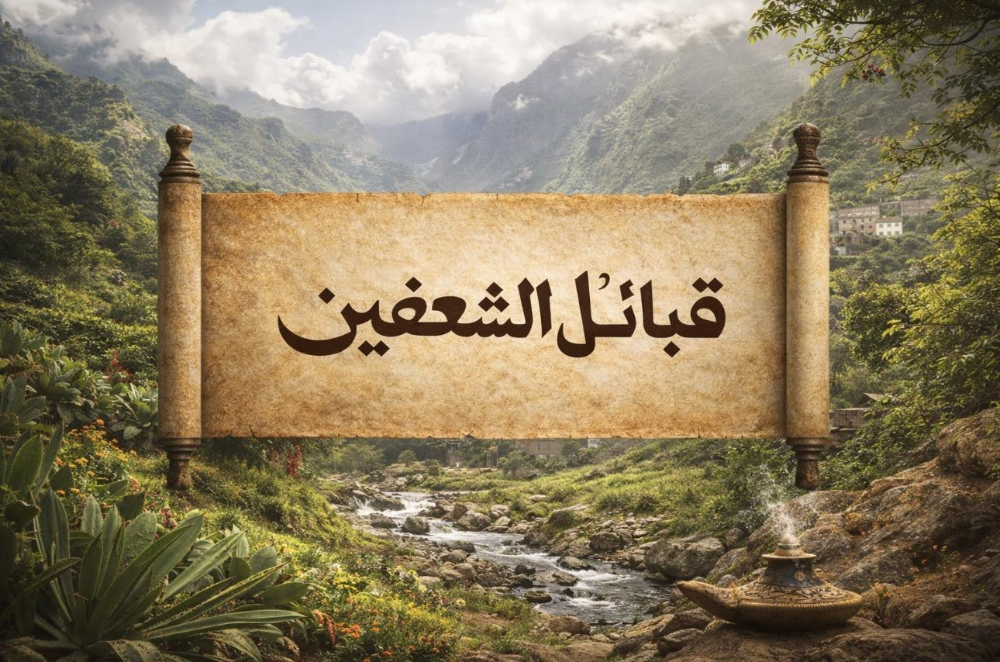

قبائل الشعفين من بلاد بني شهر
موسوعة أولية منظمة تُعنى بتوثيق الشعفين من بلاد بني شهر، على هيئة صفحات متسلسلة تبدأ من التعريف العام، ثم القبائل، ثم الصفحات الداخلية الخاصة بكل قبيلة وما يتبعها من أقسام مستقلة.
مدخل إلى صفحات القبائل
في هذه الصفحة تبدأ البنية العامة للموقع، ثم ينتقل الزائر إلى صفحة القبائل، ومنها إلى الصفحة الخاصة بكل قبيلة، ثم إلى الأقسام الداخلية مثل شجرة العائلة، والفرسان، والشعراء، والمؤثرين.